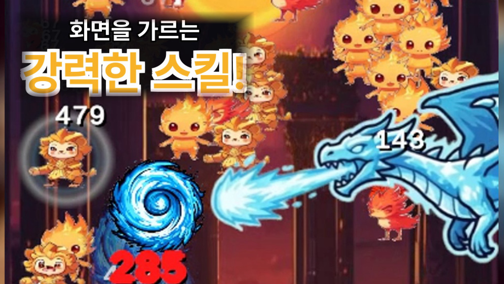
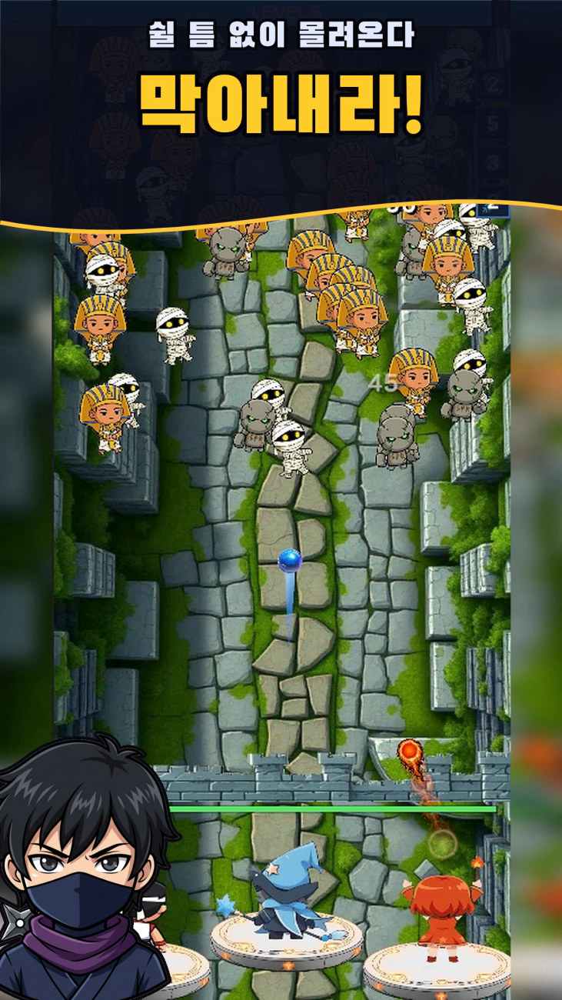
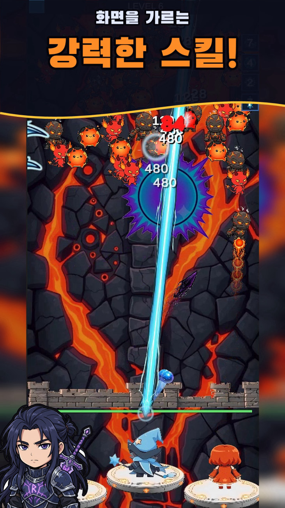
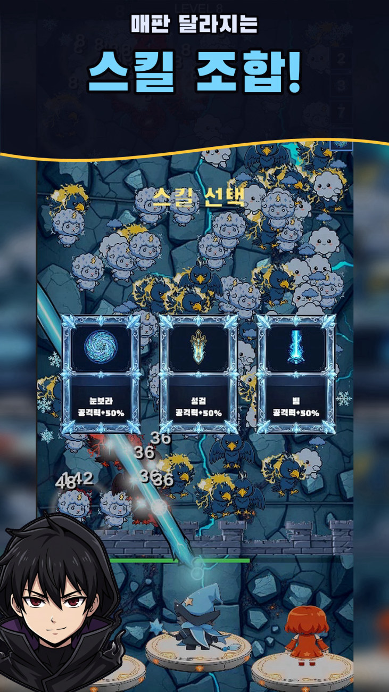
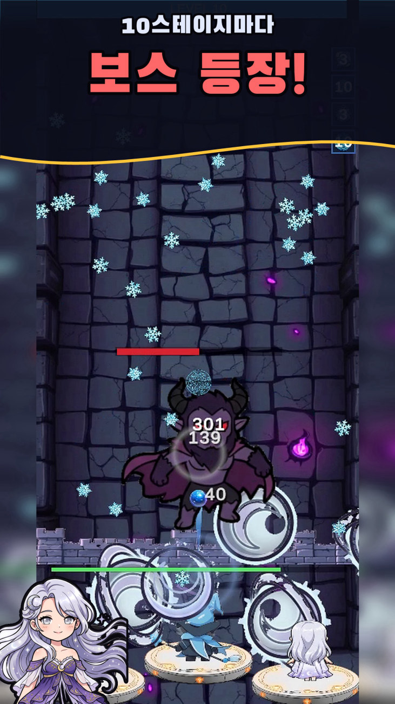
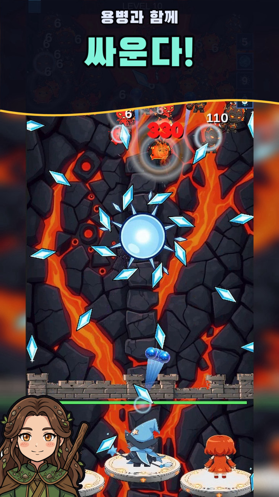
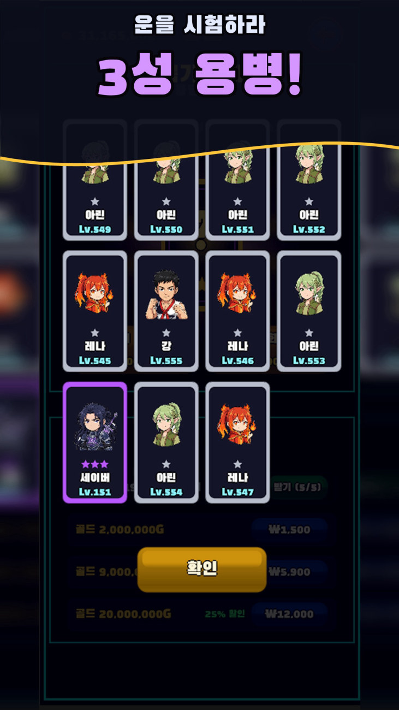

손가락 하나 까딱 안 해도 영웅이 알아서 싸운다
하늘에서 쏟아지는 몬스터를 영웅이 자동으로 요격합니다. 당신이 할 일은 단 하나 — 더 강하게 키우는 것.
Monsters pour down from the sky and your hero shoots them automatically. Your only job: make that hero stronger.
가도 가도 새로운 세계초원마을에서 용암지대, 심해미궁, 요정의숲을 지나 고대전장의 유적까지. 스테이지마다 배경도 몬스터도 다르고, 다 깨면 무한 모드가 열립니다.
운빨 용병 뽑기운으로 용병을 모으고 2명을 골라 함께 싸웁니다. 같은 용병이 또 나오면 그냥 꽝 — 그래서 "운빨"입니다.
10스테이지마다 보스전웨이브를 전부 정리하면 거대한 보스가 단독으로 등장합니다. 성벽에 닿기 전에 쓰러뜨리면 특별 보상.
성벽을 지켜라몬스터가 성벽에 닿으면 성벽이 깎입니다. 한 마리도 통과시키지 않으면 완벽 클리어 — 더 좋은 보물상자.
강제 광고 없음광고는 원할 때만 보는 보상형뿐. 보지 않아도 모든 스테이지를 클리어할 수 있습니다.
클라우드 저장 · 랭킹진행 상황이 자동으로 클라우드에 저장되어 기기를 바꿔도 이어서 할 수 있고, 전투력 랭킹으로 다른 플레이어와 겨룹니다.
스크린샷 · Screenshots






S.B.GAMES
S.B.GAMES는 한국의 1인 개발 스튜디오입니다. 조작 없이 쌓이는 성장의 재미를 담은 캐주얼·방치형 게임을 만듭니다.
S.B.GAMES is a one-person game studio based in South Korea, making casual and idle games about growth you can feel without fiddly controls.
언론·리뷰·제휴 문의: contact@sbgamesstudio.com · 프레스킷 (Press Kit)